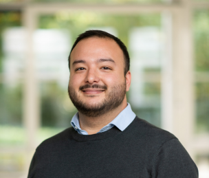

Welcome to my website - Dr. Selim Sametoğlu
I'm currently a postdoctoral researcher at Max Planck Institute for Psycholinguistics Nijmegen, focused on understanding which genetic and environmental factors contribute to—or hinder—children’s development, with a particular emphasis on language abilities.
I combine expertise in genetically informed designs (e.g., twin studies) to disentangle the sources of individual differences in development. I also have a strong background in assessing human behavior using both traditional psychometric methods and novel approaches such as social media text mining. These newer methods allow for unobtrusive, longitudinal, and cost-effective assessment of behavior at scale.
I received my Research Master’s degree in Individual Differences and Assessment from Tilburg University in 2020, where I built a strong foundation in the theory, assessment, and modeling of individual differences in human behavior.
I completed my PhD at Vrije Universiteit Amsterdam in 2025, where I investigated shared heritable influences on both social media use and wellbeing. A key focus of my dissertation was using digital behavior—such as language on social media—to assess wellbeing. This work shows how social media-based assessments can complement survey methods to provide richer insights into wellbeing at both the individual and population levels.